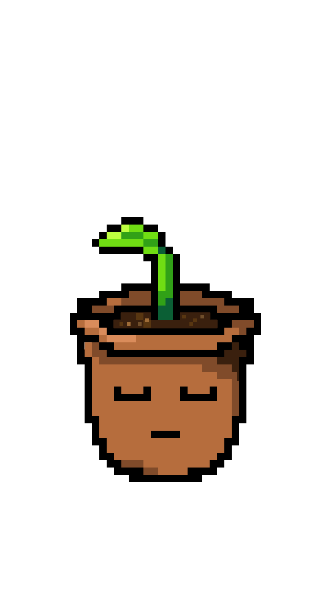
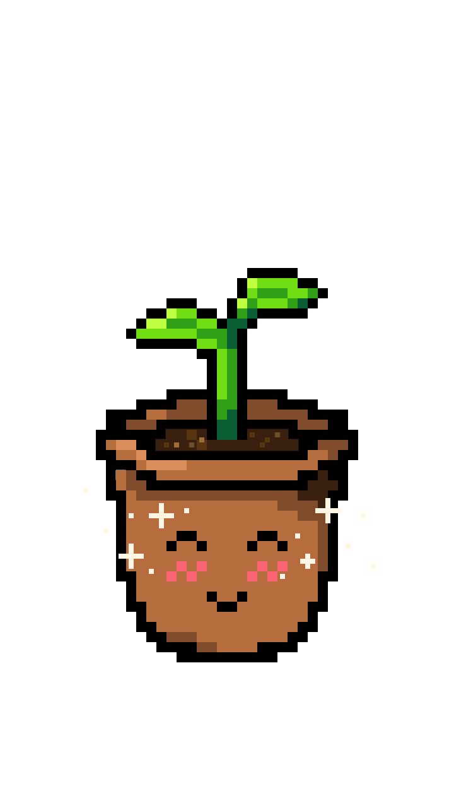

Welcome to GRO landing page
You take care of your plant by taking care of yourself


To keep the plant happy, you need to perform breathing exercises, write what are you grateful for, and do a body scan meditation
If you forget to take care of the plant and yourself, the plant becomes sad, and it loses its leafs
Important information